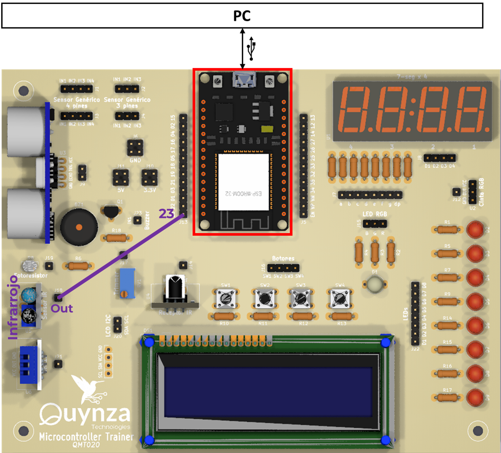
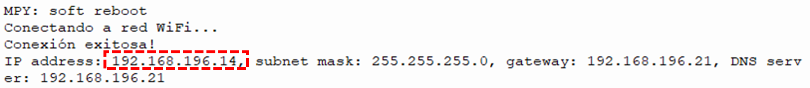
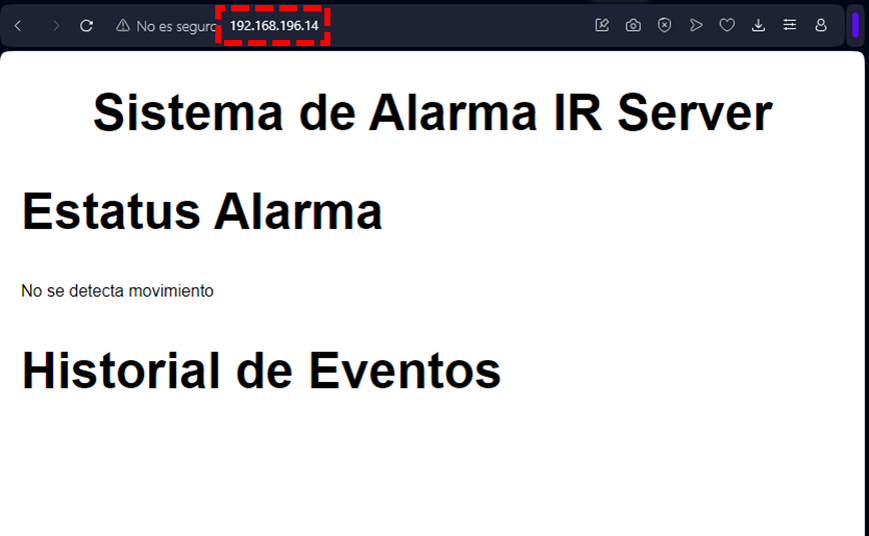
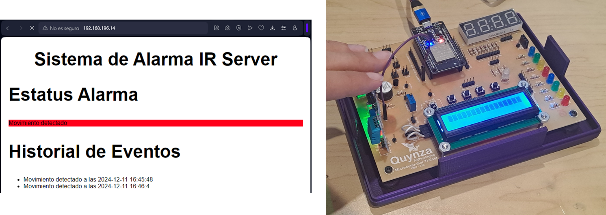

Ejercicio 4-4: Sistema de Alarma con Sensor Infrarrojo y Notificación Web
Descripción
Usando Micropython, con el Ejercicio 4-4: Sistema de Alarma con Sensor Infrarrojo y Notificación Web se va a aprender a realizar un monitoreo de movimiento mendiante la lectura del sensor infrarrojo, el cual por medio de ESP32 se hará una visualización con interfaz web de un sistema de alarmas.
Para este ejercicio se necesita el Entrenador ESP32, ¡el cual puede ser adquirido en este link al mejor precio!

Código
Para este ejercicio se necesitará el archivo:
- boot.py: Script de Python especial que siempre se ejecuta al encender el ESP32. Contiene el código para conexión a una red WiFi específica
- main.py: Script principal de Python. Contiene el código para crear el servidor web para visualización de las notificaciones de alarmas y comunicarse con los clientes que se conecten.
- html_dht11.html: Texto HTML para interfaz gráfica del ejercicio, con la característica que se actualiza automáticamente cada 5 seg.
boot.py:
import network from machine import Pin p2 = Pin(2,Pin.OUT) def do_connect(ssid,pwd): wlan = network.WLAN(network.STA_IF) wlan.active(True) if not wlan.isconnected(): p2.off() print('connecting to network...') wlan.connect(ssid, pwd) while not wlan.isconnected(): pass p2.on() do_connect("XXX","YYY")
main.py:
from machine import Pin import socket import uselect as select import time sensor_ir = Pin(23, Pin.IN) # Pin para el sensor infrarrojo actual_value = 0 last_value = 0 detections = [] # Historial de detecciones def web_page(): background_color = "red" if actual_value else "white" alarm_status = "Movimiento detectado" if actual_value else "No se detecta movimiento" detection_list = "".join([f"<li>{d}</li>" for d in detections]) f = open('html_IR.html') text = f.read() f.close() html = str(text) html = str(html).replace("%bg_color", str(background_color)) html = str(html).replace("%status", str(alarm_status)) html = str(html).replace("%detect_list", str(detection_list)) return html # Create a Socket s = socket.socket(socket.AF_INET, socket.SOCK_STREAM) # s.setsockopt(socket.SOL_SOCKET, socket.SO_REUSEADDR, 1) # Bind the socket to a IP Address and Port s.bind(('', 80)) # Accept maximum 5 connections s.listen(5) time1 = time.ticks_us() while True: time2 = time.ticks_us() if time.ticks_diff(time2, time1) >= 2000000: time1 = time.ticks_us() try: last_value = actual_value # Detectar movimiento actual_value = not sensor_ir.value() if actual_value and not last_value: now = time.localtime() current_time = "{}-{}-{} {}:{}:{}".format(now[0], now[1], now[2], now[3], now[4], now[5]) detections.append(f"Movimiento detectado a las {current_time}") if len(detections) > 10: # Limitar a las últimas 10 detecciones detections.pop(0) except Exception as e: print("Error: ", e) # Check incoming client each 0.5 seg r, w, err = select.select((s,), (), (), 0.5) if r: for readable in r: # When a client connects, the connection is accepted conn, addr = s.accept() print('Got a connection from %s' % str(addr)) # Get the received request of the client request = conn.recv(1024) request = str(request) print('Content = %s' % request) # Generate the HTML text of Web Site response = web_page() # Send the responde to client following HTML protocols conn.send('HTTP/1.0 200 OK\r\nContent-type: text/html\r\n\r\n') conn.sendall(response) # Close Socket conn.close()
html_dht11.html:
<!DOCTYPE HTML> <html> <head> <title>ESP Web Server</title> <meta name="viewport" content="width=device-width, initial-scale=1"> <meta http-equiv="refresh" content="5"> <link rel="stylesheet" href="https://use.fontawesome.com/releases/v5.7.2/css/all.css" integrity="sha384-fnmOCqbTlWIlj8LyTjo7mOUStjsKC4pOpQbqyi7RrhN7udi9RwhKkMHpvLbHG9Sr" crossorigin="anonymous"> <style> body {font-family: Arial, sans-serif; margin: 20px;} h1 {font-size: 3.0rem; color: black; text-align: center;} h2 {font-size: 3.0rem; color: black;} table {width: 100%; border-collapse: collapse;} th, td {padding: 10px; border: 1px solid black; text-align: center;} th {background-color: #f2f2f2;} #status {background-color: %bg_color;} </style> </head> <body> <h1>Sistema de Alarma IR Server</h1> <h2>Estatus Alarma</h2> <p id="status">%status</p> <h2>Historial de Eventos</h2> <ul id="eventos"> %detect_list </ul> </body> </html>
Explicación paso a paso
boot.py:
Este es el mismo código definido en el Ejercicio 3-2: Conectarse a red WiFi, en el cual se da una explicación paso a paso. Se debe tener en cuenta que se debe cambiar el contenido con la información de la red WiFi propia:
- XXX: Nombre de su red WiFi
- YYY: Contraseña de su red WiFi
main.py:
Teniendo en claro el funcionamiento de los socket para creación de servidores web con ESP32 (véase explicación), se procede a explicar el código desarrollado:
En primer lugar importamos las librerías necesarias para este ejercicio:
- socket: La librería socket es usado para la creación se sockets con ESP32
- machine.Pin: La clase machine.Pin es usado para controlar los pines GPIO (General-purpose Input-Output) del ESP32
- uselect: La librería uselect es para esperar eficientemente eventos en múltiples transmisiones. En este ejercicio se utiliza para esperar las conexiones de clientes entrantes sin necesidad de detener la operación del ESP32
- time: La librería time proporciona funciones para obtener la hora y fecha actuales, medir intervalos de tiempo y retrasos. En este ejercicio se va a utilizar para hacer un temporizador y medir con el sensor a intervalos fijos, además de obtener la fecha/hora actual.
from machine import Pin import socket import uselect as select import time
Luego se crea un objeto llamado sensor_ir con clase Pin, el cual se va a vincular con el GPIO23 del ESP32 con una configuración en modo entrada (Pin.IN). También se crean las variables globales actual_value, last_value y detections:
sensor_ir = Pin(23, Pin.IN) # Pin para el sensor infrarrojo actual_value = 0 last_value = 0 detections = [] # Historial de detecciones
Se crea una función llamada web_page. En este se lee el último valor del sensor leido actual_value: si se encuentra activo entonces el mensaje a mostrar en la página es "Movimiento detectado" en fondo rojo, en caso contrario el mensaje a mostrar en la página es "No se detecta movimiento" en fondo blanco. Además se va a desplegar el contenido de la lista de detección detection_list en un formato de tablas HTML. Luego se procede a leer el archivo html_IR.html que contiene la página web a mostrar en el servidor web, se convierte en un variable de tipo String y se usa la función html.replace() para reemplazar el string %bg_color por el valor de la variable background_color, el string %status por la variable alarm_status y el string %detect_list por la variable detection_list. Por último se retorna la página web modificada:
def web_page(): background_color = "red" if actual_value else "white" alarm_status = "Movimiento detectado" if actual_value else "No se detecta movimiento" detection_list = "".join([f"<li>{d}</li>" for d in detections]) f = open('html_IR.html') text = f.read() f.close() html = str(text) html = str(html).replace("%bg_color", str(background_color)) html = str(html).replace("%status", str(alarm_status)) html = str(html).replace("%detect_list", str(detection_list)) return html
Siguiendo el diagrama de flujo para la creación de sockets, primero se crea el objeto socket.socket(), donde socket.AF_INET se utiliza para definir el socket en la familia de direcciones IPv4, socket.SOCK_STREAM se utiliza para definir el socket como tipo TCP. Luego se vincula el socket a la dirección web del dispositivo al puerto 80. Y se configura el socket para recibir máximo 5 conexiones de manera simultánea:
# Create a Socket s = socket.socket(socket.AF_INET, socket.SOCK_STREAM) # s.setsockopt(socket.SOL_SOCKET, socket.SO_REUSEADDR, 1) # Bind the socket to a IP Address and Port s.bind(('', 80)) # Accept maximum 5 connections s.listen(5)
Utilizando la función time.ticks_us() que retorna el número de microsegundos transcurridos desde el encendido del ESP32, en un ciclo, cada 5000000us (equivalente a 5 seg), se ejecutará una medición del sensor infrarrojo y se guarda en la variable actual_value y el anterior en anterior_value. En caso que haya un cambio de estado (de desactivado a activado) entonces se guarda el registro de la fecha actual en la lista detections en un formato de fechas "YYYY-MM-DD HH:mm:SS", si el número de registros guardados supera a 10 entonces se borra el registro más antiguo:
time1 = time.ticks_us() while True: time2 = time.ticks_us() if time.ticks_diff(time2, time1) >= 2000000: time1 = time.ticks_us() try: last_value = actual_value # Detectar movimiento actual_value = not sensor_ir.value() if actual_value and not last_value: now = time.localtime() current_time = "{}-{}-{} {}:{}:{}".format(now[0], now[1], now[2], now[3], now[4], now[5]) detections.append(f"Movimiento detectado a las {current_time}") if len(detections) > 10: # Limitar a las últimas 10 detecciones detections.pop(0) except Exception as e: print("Error: ", e)
Utilizando la función select.select() se estará revisando la conexión del socket s. En caso de haber una conexión entrante se procede a aceptar la conexión y se imprime en consola la dirección del cliente. Luego se recibe los datos del socket enviados por el cliente, con un tamaño máximo de 1024 bits, se convierte en String y se imprime en consola. Se llama a la función web_page, se llama y este automáticamente va a generar el html de la página web con los valores actuales de temperatura y humedad. Después se envía los datos requeridos por el navegador del cliente para mostrar la página web (Encabezado + Contenido) y se cierra el socket creado para el cliente:
# Check incoming client each 0.5 seg
r, w, err = select.select((s,), (), (), 0.5)
if r:
for readable in r:
# When a client connects, the connection is accepted
conn, addr = s.accept()
print('Got a connection from %s' % str(addr))
# Get the received request of the client
request = conn.recv(1024)
request = str(request)
print('Content = %s' % request)
# Generate the HTML text of Web Site
response = web_page()
# Send the responde to client following HTML protocols
conn.send('HTTP/1.0 200 OK\r\nContent-type: text/html\r\n\r\n')
conn.sendall(response)
# Close Socket
conn.close()
Testeo en ESP32
Primero, se realiza la conexión del ESP32 a nuestro ordenador mediante USB:

Luego de subir los archivos boot.py y html_IR.html al dispositivo ESP32, en consola se va a mostrar:

Se debe anotar el campo IP address para los siguientes pasos.
Luego ejecutamos el script main.py mediante el software Thonny. Y con un computador o dispositivo móvil que esté conectado en la misma red WiFi que el ESP32, por medio de un navegador se debe conectar a la dirección web anotada en pasos anteriores:

Si cubrimos con los dedos el sensor, se podrá observar que cada 5 seg se actualiza el estado del estatus de la alarma y se agregará el registro de detección en una lista en el historial:
